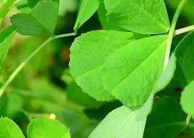

Specie: Medicago polymorpha
Taxonomy: Fabaceae; Papilionoideae; 50 kb inversion clade; NPAAA clade; Hologalegina; IRL clade; Trifolieae; Medicago
Abbr: Mpo
Level: Chromosome
chromosome number: 2n=2X=14

Introduction: Medicago polymorpha is a plant species of the genus Medicago. It is native to the Mediterranean basin but is found throughout the world. It forms a symbiotic relationship with the bacterium Sinorhizobium medicae, which is capable of nitrogen fixation. Common names include California burclover, toothed bur clover, toothed medick and burr medic. This weedy forb is an annual broadleaf plant. It inhabits agricultural land, roadsides and other disturbed areas. It is found in lawns as well, where its burrs are able to cling to the clothing or fur of any species that pass near it, thus facilitating geographic spread via these seed capsules. It makes a poor lawn in the late summer, when the leaves have yellowed and fruit sets into the 7 mm seed heads that are covered with hooked prickles. Burclover is a good forage for livestock, but the fruit is prickly. All classes of livestock, except horses and mules, can feed its leaves. New seedlings have seed leaves that are oblong. The first true leaf is rounded. Later leaves will be tripartite, with a characteristic clover-like shape, appearing alternately on the stems. Leaflets have slightly serrated edges. The tiny yellow flowers attract small butterflies and other pollinating insects. Full grown plant stems are up to 2 feet (60 cm) long, and usually sprawl along and/or under the ground. The stems often root at the nodes; adult plants, and even young plants that have been able to grow for a few weeks undisturbed can be very difficult to pull out, leaving behind tap roots and a network of plant pieces when pulled. Mechanically removing top growth from this plant will not usually eradicate it. If not properly managed, burclover may then become invasive and displace more desirable vegetation. Being a member of the family Fabaceae, the flowers are clover-like, lipped and clustered. Bloom takes place from March to June in the plant's native territory. Flowers (3–6 mm long) are small, bright yellow, and cluster into flower heads of 2 to 10 flowers at the stem tips. The fruit is a pod that coils tightly 2 to 6 times and has rows of prickles on the outside edge of the pod. The fruits are about 6–7 mm across. They start out green and relatively soft, but quickly turn brown and hard. Inside the pod are several seeds—usually yellow or tan and kidney-shaped. The burred fruiting bodies can be quite difficult to remove from softer fabrics, such as fleeces and knitted socks.
Distribution: Afghanistan, Albania, Algeria, Austria, Azores, Baleares, Bulgaria, Canary Is., Corse, Cyprus, Djibouti, East Aegean Is., Egypt, Eritrea, Ethiopia, France, Germany, Great Britain, Greece, Gulf States, Iran, Iraq, Italy, Kazakhstan, Kirgizstan, Kriti, Lebanon-Syria, Libya, Madeira, Morocco, Nepal, North Caucasus, Oman, Pakistan, Palestine, Portugal, Romania, Sardegna, Saudi Arabia, Sicilia, Sinai, Socotra, Spain, Tadzhikistan, Transcaucasus, Tunisia, Turkey, Turkmenistan, Uzbekistan, West Himalaya, Yemen, Yugoslavia
Article Title: The genome of Medicago polymorpha provides insights into its edibility and nutritional value as a vegetable and forage legume
Data source: The genome assembly and gene annotation files reported in this paper have been deposited in the Genome Warehouse in National Genomics Data Center, Beijing Institute of Genomics (China National Center for Bioinformation), Chinese Academy of Sciences, under accession number GWHANWO00000000.1 (BioProject: PRJCA003129), which is publicly accessible at https://bigd.big.ac.cn/gwh. The clean DNA-seq data, clean RNA-seq data, and clean Hi-C data of M. polymorpha genome have been deposited in the Genome Sequence Archive (GSA) database under accession number CRA003019 (https://bigd.big.ac.cn/gsa/s/q0VtV4XI).